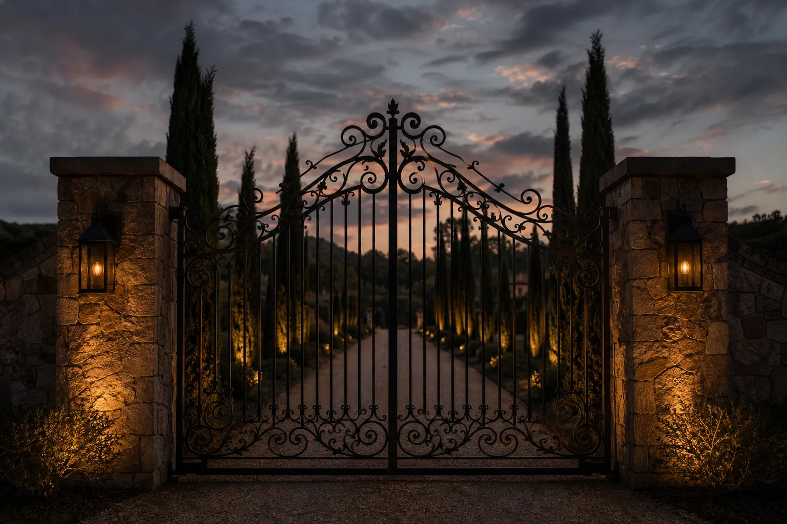
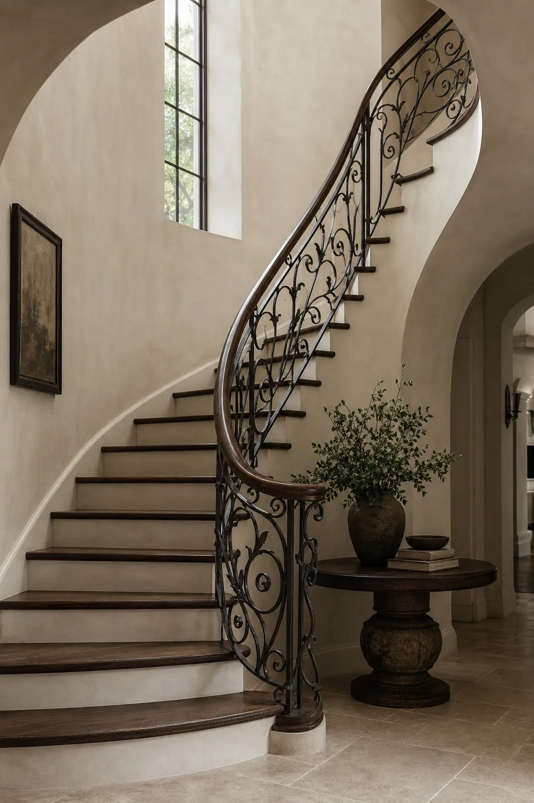
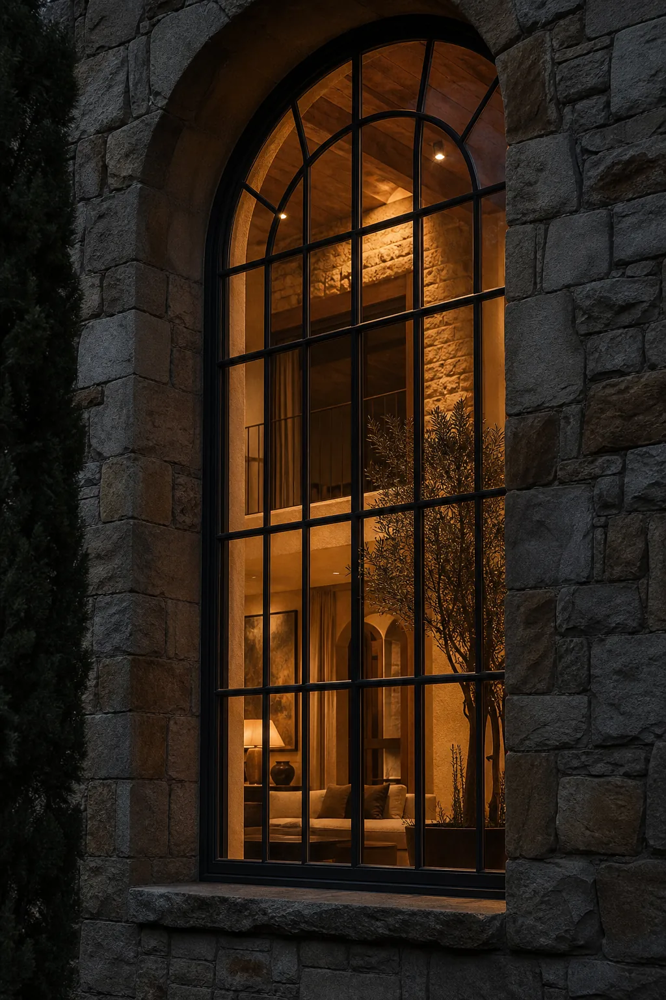
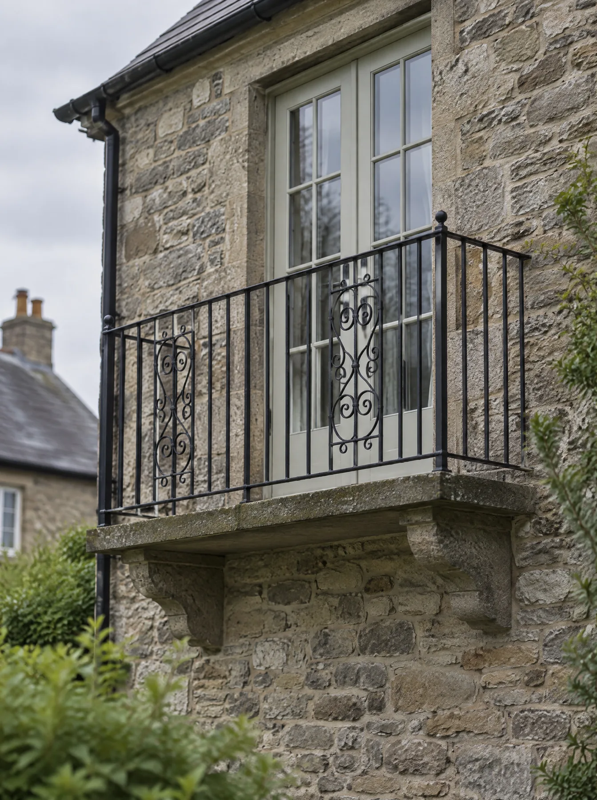
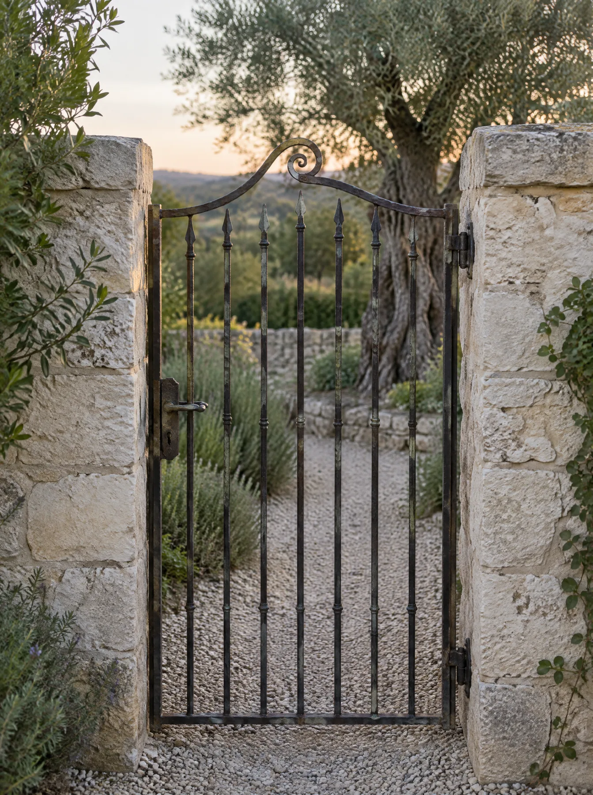

Work that left the shop
Each of these was drawn for one opening and exists once. Doors have their own page; this is everything else.

Bell Creek drive gate
An eighteen-foot pair that had to swing clear of a rising drive. The pickets are forged and collared, not welded to a frame.
- Where
- Norman, 2025
- Opening
- 18 ft double swing, with operator and safety loop
- Iron
- Forged pickets, collared joints, riveted rails
- Finish
- Oil-rubbed bronze
- Time
- 11 weeks, drawing to install

Curved balustrade
- Where
- Edmond, 2025
- Run
- 14 treads and a landing, templated on site
- Finish
- Forged black, oak cap rail

Arched steel window
- Where
- Nichols Hills, 2024
- Opening
- 11 ft head, thermally broken frame
- Finish
- Forged black

Balcony railing
The owners wanted it to look like it had always been there. Simple scroll panels, set into the stone rather than bolted to the face.
- Where
- Oklahoma City, 2024
- Iron
- Forged scroll panels, leaded into stone
- Finish
- Forged black

Garden gate
A small job that took the longest to draw. One scroll at the crest, pickets set so a dog cannot get its head through.
- Where
- Norman, 2024
- Opening
- 38 in, self-closing hinge
- Finish
- Aged patina